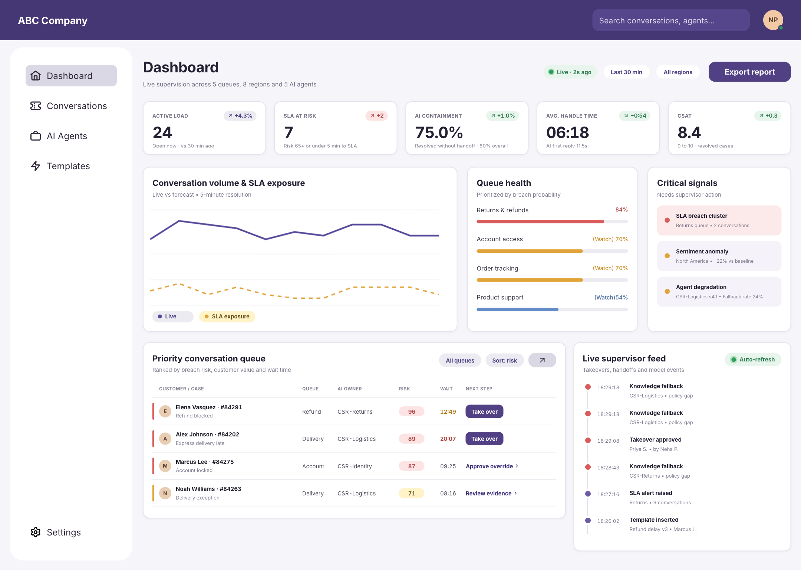
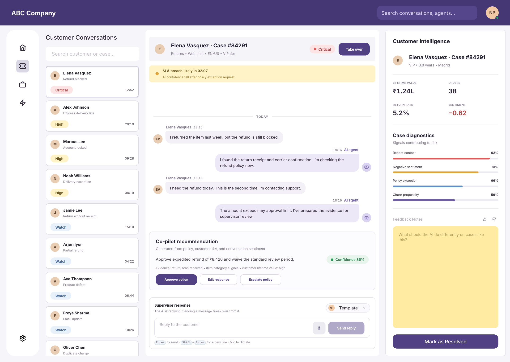
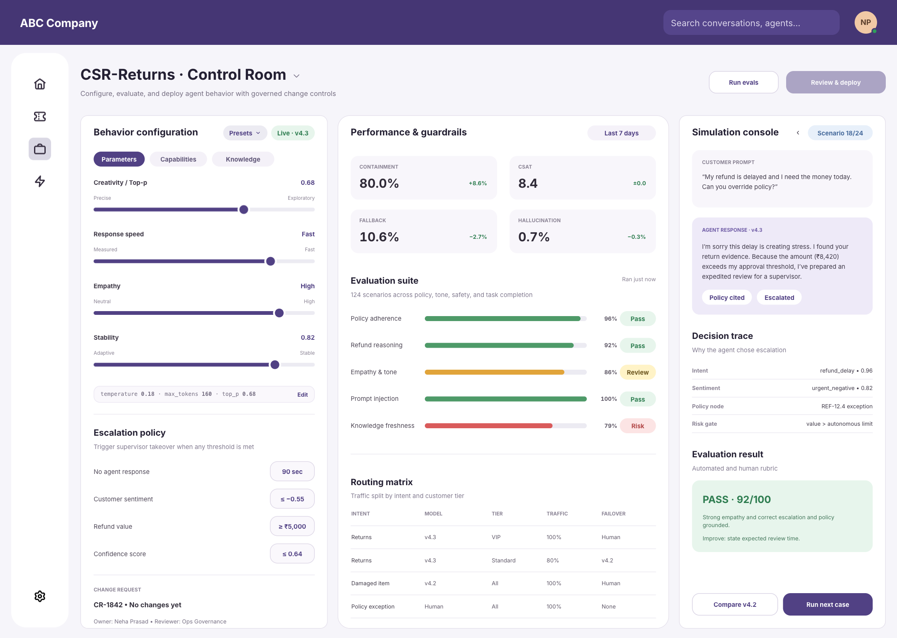
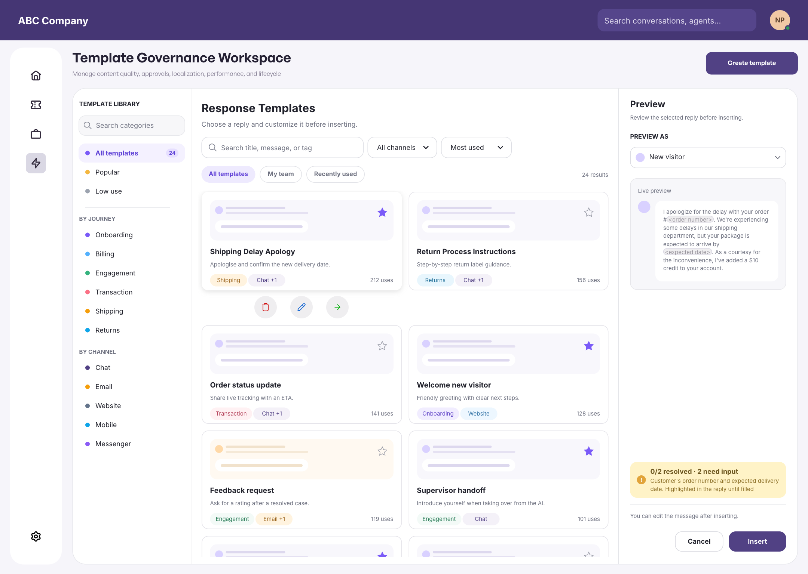
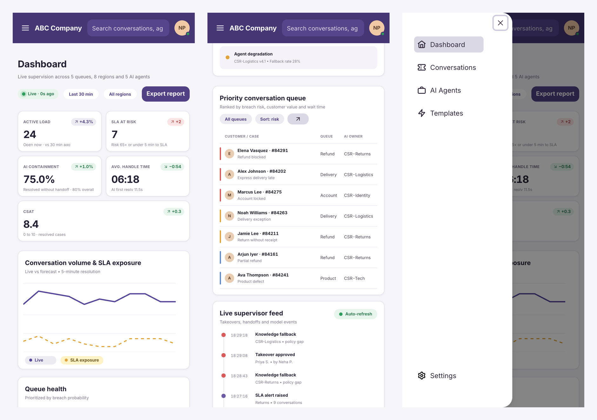

How the supervisor console is built: what each screen shows, what runs behind every control, which addresses the browser calls, and where the data lives.
Three parts: the supervisor's browser, one server, one database. The browser never touches the database. Everything goes through the server.
The browser talks to the server in three ways. Each one is used for the job it suits. The same line styles are used in every diagram below.
| Connection | In plain terms | Direction | Used for |
|---|---|---|---|
| REST | The browser asks a question or sends an action. The server answers once and the exchange ends. | Browser asks, server answers | Loading screens, take over, send a reply, save a template, deploy a change |
| WebSocket | One connection stays open. The server can speak at any moment without being asked. | Server to browser, at any time | New messages, risk changes, alerts, the activity feed |
| SSE | One connection stays open and the server sends on a fixed beat. The browser reconnects by itself if it drops. | Server to browser, every 2 seconds | The dashboard's numbers, chart, queue health and signals |
Each number on a screenshot matches a row in the table under it. The table says what the supervisor sees and what runs behind it.

1 2 3 4 5 6 7 8 9 10 11 12| On screen | Behind the scenes | Route or event | Type | |
|---|---|---|---|---|
| 1 | Search box | Waits for a pause in typing, then looks across conversations, agents and templates. | GET /api/search | REST |
| 2 | Live status | Shows the age of the last metrics update. Changes to Reconnecting or Paused when the stream is not flowing. | GET /api/analytics/stream | SSE |
| 3 | Time range and region | Changing either one reloads the dashboard and restarts the stream for the new selection. | GET /api/analytics/dashboard | REST |
| 4 | Export report | Builds a CSV file in the browser from the numbers already on screen. No server call. | None | Browser |
| 5 | Metric cards | The server counts open conversations, scores each one and totals the results. New values arrive every 2 seconds. | metrics event | SSE |
| 6 | Volume and SLA chart | Drawn from metric snapshots the server saves about once a minute. | metrics event | SSE |
| 7 | Queue health | Risk scores grouped by queue. Clicking a row filters the priority queue. | metrics event | SSE |
| 8 | Critical signals | Three checks: several risky chats in one queue, one region's mood dropping, an agent falling back too often. | metrics event | SSE |
| 9 | Priority queue | Every open conversation, highest risk first. Rows update the moment a message arrives. Wait clocks tick in the browser. | conversation_updated, new_conversation | WebSocket |
| 10 | Filters and sort | Applied in the browser to the list it already holds, so they respond instantly. | None | Browser |
| 11 | Take over | Pauses the AI on that conversation, then opens it. | POST /api/intervene | REST |
| 12 | Supervisor feed | A running log of takeovers, handoffs, alerts and deployments. | GET /api/activity, then activity events | WebSocket |

1 2 3 4 5 6 7 8 9 10 11| On screen | Behind the scenes | Route or event | Type | |
|---|---|---|---|---|
| 1 | Conversation list | The same live list the dashboard uses, kept current by events. | conversation_updated | WebSocket |
| 2 | Take over | Marks the conversation as owned by a human. The simulator stops writing AI replies for it. After takeover this button becomes Return to AI. | POST /api/intervene | REST |
| 3 | SLA banner | The countdown to the 15 minute target and the main reason for the risk, both from the risk model. | GET /api/conversations/:id | REST |
| 4 | Transcript | Loaded once, then each new message is appended as it arrives. | message_update | WebSocket |
| 5 | Co-pilot recommendation | The server picks a playbook for the queue, looks up the policy and writes a ready reply with a confidence figure. Approve sends it. | GET /api/conversations/:id/copilot | REST |
| 6 | Template | Opens the template library over the conversation, with the blanks filled from this case. | GET /api/templates | REST |
| 7 | Reply box | Sends the supervisor's message. Send stays off while any template blank is empty. | POST /api/conversations/:id/messages | REST |
| 8 | Microphone | Speech is turned into text by the browser. Finished phrases are added to the draft. | None | Browser |
| 9 | Customer details and diagnostics | Profile fields and four percentages produced by the risk model. | GET /api/conversations/:id | REST |
| 10 | Feedback notes | Saved automatically a moment after typing stops. | PUT /api/conversations/:id/feedback | REST |
| 11 | Mark as Resolved | Closes the case and ends any takeover. | PATCH /api/conversations/:id/status | REST |

1 2 3 4 5 6 7 8 9 10| On screen | Behind the scenes | Route or event | Type | |
|---|---|---|---|---|
| 1 | Behaviour sliders | Changes are held as a draft in the browser. The live agent is untouched until deploy. | None | Browser |
| 2 | Presets | Loads a saved configuration into the draft, or saves the draft under a name. | GET and POST /api/presets | REST |
| 3 | Exact values | The real settings behind the sliders: temperature, max tokens, top-p. | None | Browser |
| 4 | Escalation policy | The limits that force a handover to a human. The risk model and the simulator both read them. | Saved on deploy | Browser |
| 5 | Performance | Worked out from resolved conversations for this agent over the chosen period. | GET /api/agents/:id/performance | REST |
| 6 | Run evals | Sends the draft to be scored on five checks before anything goes live. | POST /api/agents/:id/evaluate | REST |
| 7 | Evaluation suite | The five scores, each marked Pass, Review or Risk. | GET /api/agents/:id/evaluation | REST |
| 8 | Simulation console | Replays a sample customer message against the draft and shows how the agent would answer. | POST /api/agents/:id/simulate | REST |
| 9 | Review and deploy | Shows a field-by-field comparison, then saves. The version goes up by one and the old settings are kept. | PATCH /api/agents/:id/config | REST |
| 10 | Routing matrix | Updates to the new version after a deploy, on every open screen. | agent_update | WebSocket |

1 2 3 4 5 6 7 8 9| On screen | Behind the scenes | Route or event | Type | |
|---|---|---|---|---|
| 1 | Library navigation | Groups by journey and channel. Filtering happens in the browser on the loaded list. | GET /api/templates | REST |
| 2 | Search, channel, sort | Applied in the browser. | None | Browser |
| 3 | All, My team, Recently used | My team shows templates marked as shared. | None | Browser |
| 4 | Favourite star | Changes at once on screen, then saves. If the save fails it switches back. | PATCH /api/templates/:id | REST |
| 5 | Delete, edit, use | Edit opens the editor. Use opens a conversation with this template ready. | DELETE /api/templates/:id | REST |
| 6 | Create template | The server removes unsafe HTML, finds every {{blank}} and stores the list. | POST /api/templates | REST |
| 7 | Preview | Fills the blanks for a chosen customer and shows the result. Empty blanks are marked. | None | Browser |
| 8 | Resolved count | How many blanks have a value and which still need one. | None | Browser |
| 9 | Insert | Places the filled text in the reply box of a conversation. | None | Browser |

The same dashboard code, with layout values that change by screen width. Cards go from five columns to three to two, the sidebar becomes a drawer, and the queue scrolls inside its own card so the page never scrolls sideways.
Five sequences, read top to bottom. Each row is one step.
Why the stream waits 2 seconds (step 5). The automated test for this screen waits until the browser has no requests in progress. A stream is a request that never finishes, so opening it straight away meant the page never looked finished and the test failed.
The page now loads with a normal request first and opens the stream at the first 2 second beat. The supervisor sees no difference, and the test passes.
If Return to AI was triggered twice at nearly the same moment, two handoff notes were written. Both requests checked the flag before either had changed it.
Every address the server answers. Screen routes are what appears in the browser's address bar. API routes are what the screens call.
| Address | Screen | Loaded |
|---|---|---|
| / | Dashboard | With the app |
| /conversations, /conversation/:id | Conversation | On first visit |
| /agent-config | Agent configuration | On first visit |
| /templates | Templates | On first visit |
| /settings | Settings | On first visit |
| Route | What it does |
|---|---|
| GET /api/conversations | Lists conversations. Accepts filters, a search term and sort by risk. |
| GET /api/conversations/:id | One conversation with its transcript and current risk. |
| POST /api/conversations/:id/messages | Adds a message. Used for supervisor replies. |
| PATCH /api/conversations/:id/status | Resolves, reopens or escalates. |
| POST /api/conversations/:id/tags | Adds tags. |
| PUT /api/conversations/:id/feedback | Saves feedback notes and the rating. |
| GET /api/conversations/:id/copilot | Returns the recommended action and a ready reply. |
| POST /api/conversations/:id/copilot/decision | Records that the supervisor approved or escalated. |
| POST /api/intervene | Take over from the AI. |
| POST /api/intervene/release | Return to the AI with notes. A second call is refused with 409. |
| Route | What it does |
|---|---|
| GET /api/agents, GET /api/agents/:id | Agents with their settings, capabilities and thresholds. |
| PATCH /api/agents/:id/config | Checks every value is in range, saves, and raises the version when deployed. |
| GET /api/agents/:id/metrics | Stored performance figures. |
| GET /api/agents/:id/performance | Containment, satisfaction, fallback and hallucination for a period. |
| GET /api/agents/:id/evaluation | The latest evaluation result. |
| POST /api/agents/:id/evaluate | Scores the live settings or a draft. |
| POST /api/agents/:id/simulate | Replays a sample case, optionally against the previous version too. |
| GET /api/presets, POST /api/presets | Lists and saves named configurations. |
| DELETE /api/presets/:id, POST /api/presets/:id/apply | Removes a preset, or applies one straight to an agent. |
| Route | What it does |
|---|---|
| GET /api/templates | Lists templates. Accepts search, category, channel and sort. |
| POST /api/templates | Creates one. Cleans the HTML and records its blanks. |
| GET, PATCH, DELETE /api/templates/:id | Reads, edits or removes one. |
| POST /api/templates/:id/render | Fills the blanks on the server and returns the finished text. |
| Route | What it does |
|---|---|
| GET /api/analytics/dashboard | Everything the dashboard shows, in one answer. |
| GET /api/analytics/stream | The same numbers as a stream, every 2 seconds. |
| GET /api/analytics/overview, /agents, /issues | Totals and trends by day, by agent and by issue. |
| GET /api/activity | Recent entries for the supervisor feed. |
| GET /api/search | Search across conversations, agents and templates. |
| GET /api/system/status, POST /api/system/simulation | Reads and switches the traffic simulator. |
| POST /api/system/reset | Reloads the sample data. |
| GET /api/knowledge-base, POST /api/vector/search | Knowledge sources and policy lookup. |
| GET /health, GET /api-docs | Health check and the interactive API reference. |
| Event | Sent when | Effect on screen |
|---|---|---|
| conversations_update | A browser connects | Fills the live list |
| new_conversation | A customer starts a chat | A new row appears in the queue |
| message_update | Any message is added | The transcript grows |
| conversation_updated | Status, risk or ownership changes | The row moves and its labels change |
| metrics_update | Sentiment or confidence changes | Figures on the conversation screen update |
| alert | A conversation crosses an escalation limit | A toast with a link to the conversation |
| activity | A takeover, handoff, alert or deploy | A new line in the supervisor feed |
| agent_update | An agent's settings are saved | Version and routing update |
| template_created, _updated, _deleted | A template changes | The library updates on every open screen |
| preset_created, _deleted | A preset changes | The presets menu updates |
Seven collections in MongoDB. A collection is a set of records of one kind. The risk score is not stored: it depends on how long the customer has waited, so it is worked out each time it is needed.
Work the server does on a timer, whether or not anyone clicks.
| Job | How often | What it does |
|---|---|---|
| Traffic simulator | Every 6 seconds | Picks one open conversation and moves it forward: a customer message or an AI reply written with that agent's current settings. Skips AI replies on conversations a supervisor owns. |
| New conversation | About every 42 seconds | Opens a new chat while fewer than 30 are open. |
| Resolve one | About every 48 seconds | Closes a calm, low-risk conversation, as an AI agent would. |
| Metric snapshot | About once a minute | Saves the current totals so the trend chart has history. |
| Metrics stream | Every 2 seconds, per open dashboard | Recomputes the dashboard and sends it. Stops when that browser disconnects. |
| Connection check | Every 30 seconds | Pings each browser and drops any that stopped answering. |
There is one simulator for the whole server. An earlier design started one per connected browser, so every extra open tab multiplied the traffic.
One function scores every conversation from 0 to 100. The dashboard, the conversation screen and the simulator all use it, so they cannot disagree.
The parts are added up and passed through an S-shaped curve that turns any total into a figure between 0 and 100. The curve was tuned so the five conversations in the design land close to their designed scores.
| Score | Label on screen | What follows |
|---|---|---|
| 90 to 100 | Critical | Take over is recommended |
| 70 to 89 | High | Alert level becomes high at 80 |
| 50 to 69 | Watch | Alert level becomes medium at 60. Counts as SLA at risk from 65 |
| 0 to 49 | Stable | The AI continues alone |
Separately, an agent's escalation thresholds can raise the alert on their own. Two limits crossed, or a customer asking for a human, makes the alert high whatever the score.
The app is built in layers. Each layer makes something available to everything inside it.
| Screen | Building blocks |
|---|---|
| Dashboard | Metric card, volume chart, queue health, critical signals, priority queue, supervisor feed |
| Conversation | Conversation list, message list, co-pilot card, reply composer, customer details, return to AI dialog, template picker |
| Agent configuration | Behaviour panel, presets menu, performance panel, simulation console, review and deploy dialogs |
| Templates | Template workspace, template card, template editor |
The live site is served as plain files with no server behind it. The screens are identical. What answers them is different.
Where each part of this document lives in the repository.
backend/ server.js starts everything: routes, database, simulator routes/ one file per group of addresses in section 5 services/ analytics, co-pilot, evaluation, simulator utils/risk.js the risk score in section 8 websocket/ the hub and the per-browser connection handler models/ the seven collections in section 6 frontend/src/ pages/ the five screens components/ the building blocks listed in section 9 context/ live connection, shared live data, settings hooks/ voice input, templates, the one-second clock theme.js design tokens from Figma local/ the data layer for the hosted version testing/ the 14 automated checks docs/ this document, screenshots, full documentation